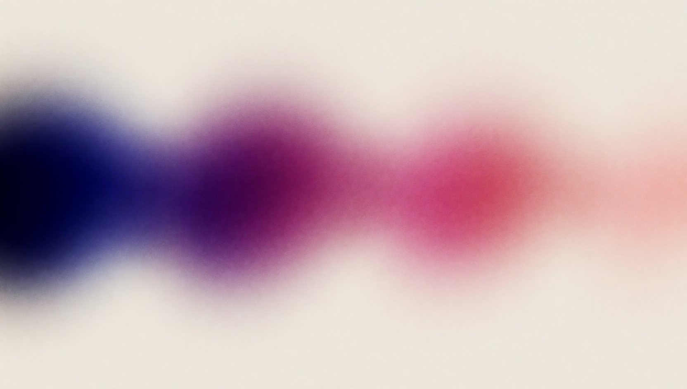

Handsel
Tools built for one person, kept in public.
What it is
A one-person software studio that builds tools for its own work and keeps them in public.
A handsel is a gift given at the start of something. Each tool here began as one, built because the work needed it, then finished properly and left in public for anyone with the same problem.
How it stays itself
Six pieces of one thing. One mark, one gradient, two typefaces, and a written set of rules. A gate scores every generated surface against those rules before it ships, and keeps the ones it refuses beside the ones it accepts, so the brand is a thing you can check rather than a thing you have to remember.
The pieces
- ck3-llm-chronicler. Turns a Crusader Kings III campaign into an illuminated chronicle. Tails the saves, melts them, and writes biographies with a model that is forbidden to invent.
- ScoreScout. Reads piano sheet music and annotates it: key, chords, difficulty, note names over the staff.
- FetchForge. A local web app that fetches video and transcodes it to HEVC on the GPU, with a queue you can walk away from.
- DeciWaves. Extracts speaker-tagged voice lines from your own installs of three Decima games into story-ordered reels. Ships code, never game content.
- BrandGate. The pipeline and the gate behind this page: generates the grounds, scores them, and keeps the ledger.
200grounds generated for one prompt
79passed the gate as it ships
29frames labelled by hand to set it
handsel-lovat.vercel.appgithub.com/prekabreki